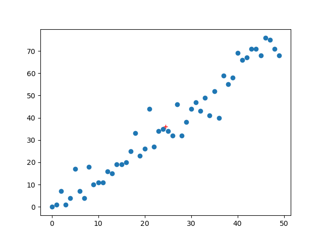
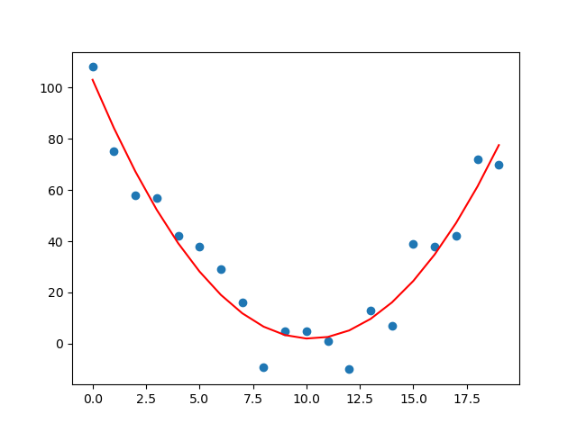
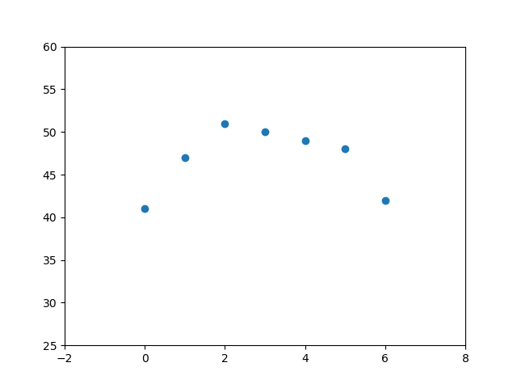
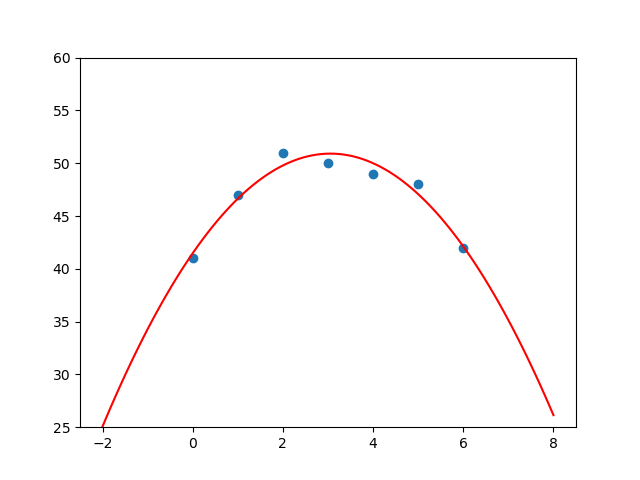
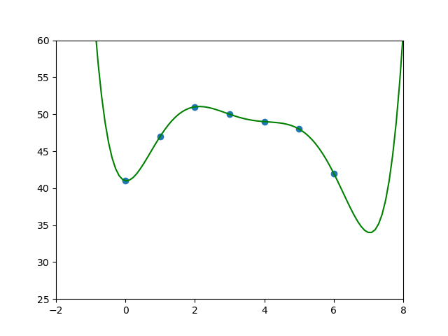

TD09 : retour du SQL, régression, simulations⚓︎
1. Entraînement SQL⚓︎
Exercice 1
On étudie une base de données parc, relative à un parc automobile.
Cette base possède deux tables, personnes et voitures.
-
la table
personnespossède comme attributs :id: un numéro d'identification unique pour chaque personne.nom,prenom,code_postal,ville
-
la table
voiturespossède comme attributs :immatriculation: le numéro d'immatriculation unique pour chaque voituremodele,marque,couleurproprietaire: cet attribut fait référence à l'attributidde la tablepersonnes.
Questions 0
- Quel rôle joue l'attribut
immatriculationdans la tablevoitures? - Quel rôle joue l'attribut
proprietairedans la tablevoitures?
Correction
immatriculationest la clé primaire la tablevoitures.proprietaireune clé étrangère de la tablevoitures, elle fait référence à la clé primaireidde la tablepersonnes.
Question 1
Afficher tout le contenu de la table personnes.
Correction
SELECT *
FROM personnes
Question 2
Afficher tout le contenu de la table voitures.
Correction
SELECT *
FROM voitures
Question 3
Donner la plaque d'immatriculation de la voiture rose.
Correction
SELECT immatriculation
FROM voitures
WHERE couleur = 'Rose'
Question 4
Insérer dans la table personnes l'individu Gerard Berry, habitant à Bordeaux (33000) ayant pour id la valeur 5.
Pour vérifier si la table a bien été modifiée :
Correction
INSERT INTO personnes
VALUES (5, "Berry", "Gérard", 33000, "Bordeaux")
Question 5
Donner le nom et le prénom du propriétaire de la Porsche.
Correction
SELECT nom, prenom
FROM personnes
INNER JOIN voitures ON voitures.proprietaire = personnes.id
WHERE marque = "Porsche"
2. Retour sur la régression linéaire⚓︎
Coefficient de corrélation linéaire de deux variables aléatoires
 Définition
Définition
Le coefficient de corrélation linéaire de deux variables aléatoires \(X\) et \(Y\) est le réel \(\rho(X,Y)\) donné par la formule :
Interprétation
- Si \(X\) et \(Y\) sont indépendantes, alors \(\rho(X,Y) = 0\)
- Si \(X\) et \(Y\) sont liées par une combinaison linéaire (ex : \(Y = 3X+2\)), alors \(\rho(X,Y) = \pm 1\)
Utilisation en statistiques
Lorsque \(\rho\) est proche de 1, on peut conjecturer que le phénomène observé est prédictible. Le tracé de la droite de régression permet alors de faire des prévisions.
Syntaxe Python 
Calcul du coefficient de corrélation : np.corrcoef(x,y)[0,1]
Considérons le code suivant :
1 2 3 4 5 6 7 8 9 10 11 12 13 14 15 16 17 18 | |
Le tracé laisse apparaître une distribution des points qui semblent être situés autour d'une droite. Ceci est confirmé par le calcul du coefficient de corrélation linéaire ( calculé par l'instruction np.corrcoef(x,y)[0,1] )

Calcul et tracé du point moyen : np.mean(x)
La fonction np.mean(x) permet de calculer la valeur moyenne d'un ensemble de valeurs stockées dans la variable x.
Le point moyen d'une série statistique double peut donc se tracer par :
plt.plot([np.mean(x)], [np.mean(y)], 'r+')

Tracé de la droite de régression : a, b = np.polyfit(x, y, 1)
- Le calcul du coefficient directeur
aet de l'ordonnée à l'originebde la droite de régression se fait par la commande
a, b = np.polyfit(x, y, 1)
- Le tracé de la droite se fait par
plt.plot(x, a*x + b)
Insérer les lignes :
a, b = np.polyfit(x, y, 1)
plt.plot(x, a*x + b, 'g-')

Exercice 2
Pour chaque question :
- Représenter le nuage de points de la série statistique.
- Calculer le coefficient de corrélation linéaire.
- Dire si un ajustement linéaire est possible.
- Si oui, représenter la droite de régression et faire une estimation de la valeur de
ypourx = 30.
Q1.
x = np.array([0, 1, 2, 3, 4, 5, 6, 7, 8, 9, 10, 11, 12, 13, 14, 15, 16, 17, 18, 19])
y = np.array([0, 17, 11, 15, 15, 2, 7, 18, 0, 6, 9, 10, 9, 5, 16, 17, 7, 0, 18, 4])
Q2.
x = np.array([0, 1, 2, 3, 4, 5, 6, 7, 8, 9, 10, 11, 12, 13, 14, 15, 16, 17, 18, 19])
y = np.array([108, 75, 58, 57, 42, 38, 29, 16, -9, 5, 5, 1, -10, 13, 7, 39, 38, 42, 72, 70])
Q3.
x = np.array([0, 1, 2, 3, 4, 5, 6, 7, 8, 9, 10, 11, 12, 13, 14, 15, 16, 17, 18, 19])
y = np.array([346, 343, 322, 321, 302, 301, 287, 269, 272, 257, 257, 249, 226, 227, 208, 201, 175, 191, 169, 158])
 Hors Programme retour sur la question Q2
Hors Programme retour sur la question Q2
Le nuage de points obtenu en Q2 ne donne absolument pas envie de faire un ajustement linéaire : la forme du nuage ne ressemble pas du tout à une droite.
Par contre, elle ressemble à une parabole...
Peut-on ajuster cette série statistique avec un polynôme de degré 2 ? Essayons !
Il faut pour cela se servir de la fonction polyfit et lui demander les 3 coefficients du polynôme de degré 2 qui «fitte» le mieux notre nuage :
1 2 3 4 5 6 7 8 9 10 11 12 13 14 15 | |

>>> a*30**2 + b*30 + c
383.80943267259056
x vaudra 30, y vaudra environ 383.
Mais alors, en augmentant le degré, ne peut-on pas obtenir un ajustement parfait ???
Réponse : si, on peut, mais c'est mal.
Exemple
Prenons ce nuage de points : 
On peut le fitter assez proprement avec une parabole :

Mais polyfit est capable de mieux ! Il peut nous donner les coefficients du polynôme de degré 6 qui passera parfaitement par les 7 points :
a, b, c, d, e, f, g = np.polyfit(x, y, 6)
Traçons donc la courbe du polynôme a*x**6 + b*x**5 + c*x**4 + d*x**3 + e*x**2 + f*x + g :

C'est parfait pour les valeurs données... mais très bizarre dès qu'on sort de ces valeurs.
À trop vouloir coller aux valeurs données, on a perdu le «sens» de la série statistique, et nos prévisions risquent d'être totalement fausses. On appelle ce phénomène l'overfitting, ou sur-apprentissage en Intelligence Artificielle.
Une interprétation dans la vie courante pourrait être que lorsque vous savez trop parfaitement quelque chose, il y a un risque d'en perdre le sens et donc de ne pas pouvoir s'adapter en cas de léger décalage par rapport à ce que vous attendez.
3. Retour sur les simulations⚓︎
Syntaxe des lois usuelles
Rappel : on utilise les simulateurs de lois du module random de la bibliothèque numpy.
Ceci nécessite systématiquement la présence des deux lignes suivantes au début de chaque script :
1 2 | |
-
loi uniforme :
rd.random()renvoie un réel dans \([0;1]\) qui suit une loi uniforme (chaque réel a la même probabilité d'apparition)rd.randint(a,b)renvoie un entier dans \([a;b[\) qui suit une loi uniforme (chaque entier a la même probabilité d'apparition). Attention, la valeur \(b\) n'est pas prise. Ce qui signifie que pour un tirage aléatoire uniforme de 0 et de 1, il faut utiliser l'expressionrd.randint(0,2).
-
loi binomiale :
rd.binomial(n,p)renvoie un entier qui suit une loi binomiale de paramètre \((n,p)\). (\(n\) répétitions d'une épreuve de Bernoulli de paramètre \(p\)) -
loi géométrique :
rd.geometric(p)renvoie un entier qui suit une loi géométrique de paramètre \(p\) (nombre d'expériences de Bernoulli de paramètre \(p\) avant l'apparition du premier succès) -
loi exponentielle :
rd.exponential(1/lambda)renvoie un réel qui suit une loi exponentielle de paramètrelambda. -
loi de Poisson :
rd.poisson(lambda)renvoie un entier qui suit une loi de Poisson de paramètrelambda.
Comment renvoyer un vecteur plutôt qu'une seule valeur unique ? Il suffit de rajouter le nombre de simulations désirées comme dernier paramètre dans la parenthèse.
Exemple :
Pour simuler 10 tirages aléatoires de nombres égaux à 0 ou à 1, on utilisera :
>>> X = rd.randint(0,2,10)
>>> X
array([0, 1, 0, 0, 1, 0, 0, 0, 1, 1])
Pour connaître la valeur du 5ème tirage, on appelera :
>>> X[4]
1
 Ne pas oublier qu'on commence à indexer à 0, donc le 5ème élément est l'élément d'indice 4...
Ne pas oublier qu'on commence à indexer à 0, donc le 5ème élément est l'élément d'indice 4...
Lien pour ouvrir une console Python dans un nouvel onglet (sous Chrome de préférence)
Exercice 3
On se propose dans cet exercice de retrouver empiriquement la formule théorique du calcul de probabilités d'une variable \(X\) suivant une loi de Poisson de paramètre \(\lambda\) :
Q1. Compléter le code ci-dessous afin que la fonction formule_poisson qui prend pour paramètres deux entiers :
lamb: le paramètre de la loi de Poissonk: le nombre dont on veut tester la probabilité d'apparition lors d'une loi de Poisson
renvoie la probabilité que \(X\) soit égal à k si \(X\) suit une loi de Poisson de paramètre lamb.
1 2 3 4 | |
Correction Q1.
1 2 3 4 | |
Q2. On va maintenant calculer de manière empirique cette probabilité, grâce à la loi des grands nombres.
Compléter le code ci-dessous afin que la fonction empirique_poisson qui prend pour paramètres 3 entiers :
lamb: le paramètre de la loi de Poissonk: le nombre dont on veut tester la probabilité d'apparition lors d'une loi de Poissonnb_iter: le nombre d'itérations
renvoie la fréquence d'apparition de la valeur k lors de nb_iter itérations d'un tirage par la fonction Python rd.poisson.
1 2 3 4 5 6 7 8 9 10 | |
Correction Q2.
1 2 3 4 5 6 7 8 9 10 | |
Q3. Comparer ces deux fonctions avec (par exemple) lamb égal à 10, k égal à 7 et une valeur nb_iter que vous adapterez.
Correction Q3.
>>> formule_poisson(10, 7)
0.09007922571921598
>>> empirique_poisson(10, 7, 10**6)
0.090022
rd.poisson est correctement implémentée...
Exercice 4
d'après BCE ESC 2020
Un mobile se déplace sur les points à coordonnées entières positives d'un axe d'origine \(O\).
Au départ, le mobile est à l'origine (point d'abscisse 0). Le mobile se déplace selon la règle suivante : s'il est sur le point d'abscisse \(k-1\) (\(k \in \mathbb{N}^*\)) à l'instant \(n\) (\(n \in \mathbb{N}\)), alors, à l'instant \(n+1\), il sera sur le point d'abscisse \(k\) avec la probabilité \(\frac{k}{k+1}\), ou sur le point d'abscisse 0 avec la probabilité \(\frac{1}{k+1}\).
On note \(U\) l'instant auquel le mobile se trouve pour la première fois à l'origine (sans compter son positionnement de départ) et on admet que \(U\) est une variable aléatoire.
Compléter les commandes du script Python suivant afin qu'il calcule et affiche la valeur prise par \(U\) lors de l'expérience aléatoire étudiée.
1 2 3 4 5 6 7 8 9 10 | |